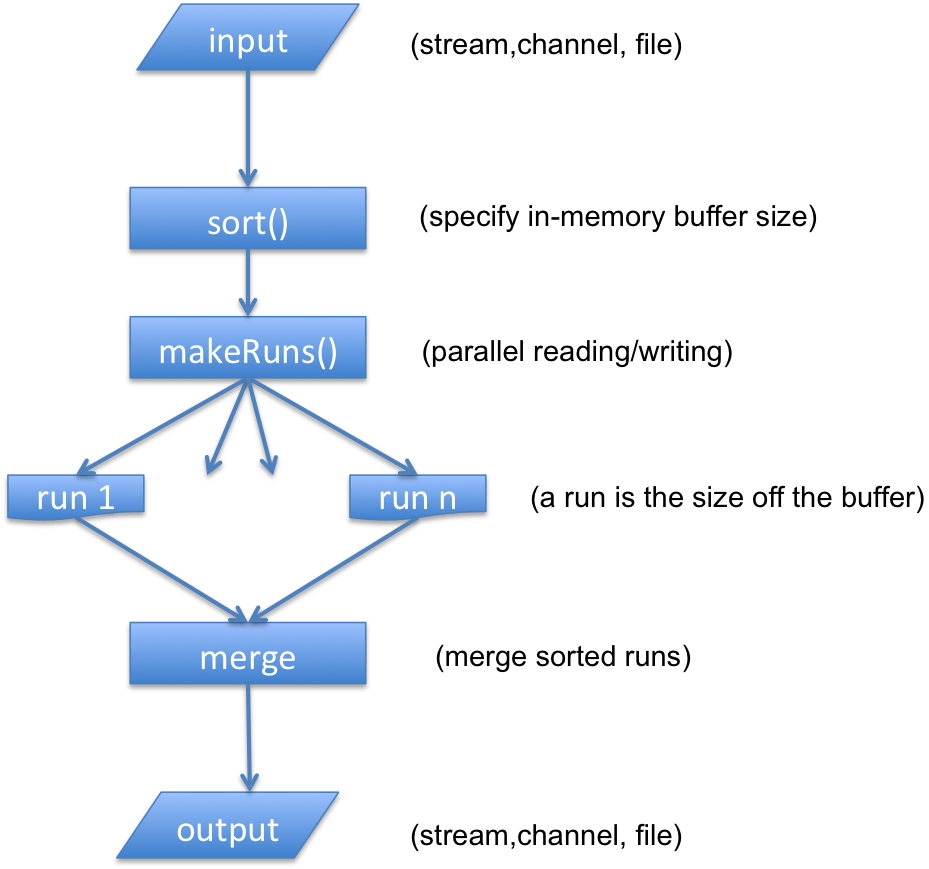

Overview
One of the original purposes of Mellowtech Core was to offer fast disc based sorting for handling indexing of large document collections. Typically it is always faster to work with sorted data when you build your text search index. Obviously, there are other circumstances in which you want to sort larger amounts of data without being restricted by ram memory
Sorting comes in two different flavors: ByteStorable sort and ByteComparable sort. The difference being that the ByteComparable sort will not create any objects and instead sorts objects stored in a byte buffer/array. Typically, the ByteComparable version is a lot faster since it never “unpacks” the incoming input stream of objects.
The general flow of the sort can be seen below

Example Usage
In the following example we will use the ByteComparable version (org.mellowtech.core.sort.EDiscBasedSort). For ordinary sort (org.mellowtech.core.sort.DiscBasedSort) the pattern is exactly the same
1 Get some Data to Sort
A nicely prepared download can be found at pizzachili
2 Parse your Data
The next step is to transform the downloaded text file to a file of ByteStorables (CBStrings in this case).
public static void parse() throws Exception{
Pattern p = Pattern.compile("[\\s|\\p{Punct}]+");
InputStream is = new GZIPInputStream(new FileInputStream("/tmp/english.1024MB.gz"));
Scanner s = new Scanner(is);
s.useDelimiter(p);
CBString tmp;
StorableOutputStream sos = new StorableOutputStream(new FileOutputStream("/tmp/english.1024MB.bs"));
int i = 0;
while(s.hasNext()){
String n = s.next();
if(n.length() > 1){
tmp = new CBString(n);
sos.write(tmp);
i++;
}
if(i % 1000000 == 0)
System.out.println(i);
}
sos.flush();
}
We use the Scanner class to extract all words form the file (omitting any words that has a length less than 2) and store them in a new file containing CBStrings. Later we will show a way of removing this step
3 Sort Data
The final step is to sort the words and stored them in a new file
public static void sSort() throws Exception {
long l = System.currentTimeMillis();
EDiscBasedSort<String,CBString> edb = new EDiscBasedSort <>(new CBString(), "/tmp");
edb.sort("/tmp/english.1024MB.bs", "/tmp/english-sorted.bs", 1024*1024*160);
System.out.println("esort took: "+ (System.currentTimeMillis() - l) + "ms");
}
A couple of things to note. When instantiating the EDiscBasedSort you need to provide a ByteComparable template to be used in the sorting step. Also in the actual sort you need to provide a size of the in-memory buffer that will be used for storing the ByteStorables to sort in each run. That buffer will be the basic memory footprint for the sort (with an additional array of integers holding positions in the buffer)
4 Combined Parsing and Sorting
In many cases it does not make sense to store an intermediate file (Step 2 above) but rather directly sort your input file. This can be done in many different ways. The core library contains a special InputStream that takes as input a Scanner and emits ByteStorables. So if we wanted to combine step 2 and 3 above we could do the following:
public static void parseAndSort() throws Exception {
Pattern p = Pattern.compile("[\\s|\\p{Punct}]+");
InputStream is = new GZIPInputStream(new FileInputStream("/tmp/english.1024MB.gz"));
Scanner s = new Scanner(is);
s.useDelimiter(p);
BufferedOutputStream os = new BufferedOutputStream(new FileOutputStream("/tmp/english-sorted-1.bs"),1024*1024);
EDiscBasedSort <String, CBString> edb = new EDiscBasedSort <>(new CBString(), "/tmp");
edb.sort(new ScannerInputStream(s,1), os, 1024*1024*160);
os.close();
}
As you can see the code is very similar with the difference that we now sort an ScannerInputStream and outputs an OutputStream. Doing this way will reduce the need of creating a file of ByteStorables first
5 Verifying
A simple way to verify the output is to iterate through it is to use a StorableInputStream to read the sorted file and make sure no BStorable is smaller than the previous one
public static void verify() throws Exception {
StorableInputStream<String, CBString> sis = new StorableInputStream <>(new FileInputStream("/tmp/english-sorted.bs"), new CBString());
CBString prev = sis.next();
CBString next = null;
while((next = sis.next()) != null){
if(prev.compareTo(next) > 0){
System.out.println("previous word greater than next "+prev+" "+next);
}
prev = next;
}
}